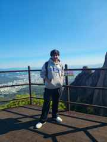

Web development
HTML · CSS · JavaScript
COMPUTER ENGINEERING STUDENT
A curious learner exploring technology, creativity, and the ideas that make everyday life better.
Based in South Korea · Originally from Nepal

Curious mind.01 / ABOUT ME
I'm Saiman Silwal, a Computer Engineering student at Gachon University in South Korea. I'm originally from Dhading, Nepal, and I enjoy discovering how technology can solve real-world problems.
I'm currently strengthening my foundations in web development, programming, machine learning, and cloud computing. I believe curiosity, consistent practice, and learning from mistakes are the best ways to grow.
02 / MY TOOLKIT
Skills I'm developing through university coursework and hands-on practice.
HTML · CSS · JavaScript
Python · C · C++
Git · GitHub · VS Code
Machine Learning · Cloud
03 / SELECTED WORK
A few stops in my learning journey. More projects will be added as I grow.
WEB DEVELOPMENT
A collection of coursework exploring HTML, CSS, JavaScript, APIs, forms, and responsive design.
View repository ↗TEAM PROJECT
A collaborative university project focused on planning and building a shared website with teammates.
View repository ↗04 / SAY HELLO
I'm always open to learning, collaborating, and connecting with people who enjoy building things.